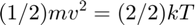
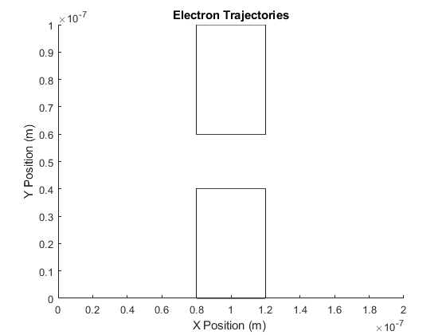
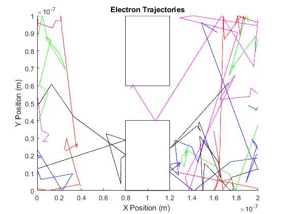
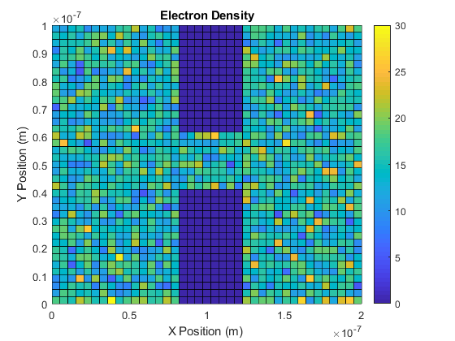
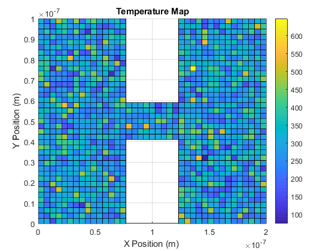

Assignment 1
Matthew Lazarus 100962142
Contents
Question 3: Enhancements
In this question, a number of electrons are randomly positioned within a set grid. With the system set to 300K, each electron is assigned velocity components based off of the Gaussian distribution. When an electron hits the top of the grid, it bounces back, and when it hits the side of the grid, it continues its trajectory from the opposite side of the grid. There is also a probability of scattering at each time step for each electron. Furthermore, two rectangular barriers were introduced into the system.
% Clear all previous variables, figures, etc, to ensure that the workspace % is clean. clear all clearvars clearvars -GLOBAL close all %Define constants that may need to be used later in the code. global C C.q_0 = 1.60217653e-19; % electron charge C.hb = 1.054571596e-34; % Dirac constant C.h = C.hb * 2 * pi; % Planck constant C.m_0 = 9.10938215e-31; % electron mass C.kb = 1.3806504e-23; % Boltzmann constant C.eps_0 = 8.854187817e-12; % vacuum permittivity C.mu_0 = 1.2566370614e-6; % vacuum permeability C.c = 299792458; % speed of light C.g = 9.80665; %metres (32.1740 ft) per s² %Thermal Velocity at 300K: vth = sqrt(C.kb*300/(0.26*C.m_0)); %Find Mean Free Path tmn = 0.2*10^-12; freePath = tmn * vth; % Set the number of electrons, time step and total time. Initialize % matrices for the x and y positions, the x and y components of the % velocity, and the temperature of the system. Column 1 of each matrice is % the previous value, while column 2 is the current value. numElectrons=20000; dt = 4e-15; %seconds nTime = 4e-12; %Simulation length x = zeros(numElectrons,2); %Position (x) y = zeros(numElectrons, 2); %Position (y) vx = zeros(numElectrons, 2); %Velocity (x) vy = zeros(numElectrons, 2); %Velocity (y) vTotal = zeros(numElectrons, 2); %Velocity temperature = zeros(numElectrons,2); % Define two vectors to keep track of the time and distance since the last % scatter, for each electron. Additionally initalize a counter for them. distanceSinceLastScatter = zeros(numElectrons,1); timeSinceLastScatter = zeros(numElectrons,1); scatterCount = 0;
Now, randomly assign initial positions & velocities. Choose each velocity component based off of the Gaussian distribution. Divide by the square root of 2 as there are 2 degrees of freedom. This is derived from equating the acceleration of the electron to its kinetic energy, as seen by the equation below. Addditionally, ensure no electron is placed within one of the rectangular barriers.

for electronCount = 1:numElectrons x(electronCount,2)=rand()*200e-9; if(x(electronCount,2)<1.2e-7 && x(electronCount,2)>0.8e-7) y(electronCount,2)=rand()*20e-9+0.4e-7; else y(electronCount,2)=rand()*100e-9; end vx(electronCount,2) = vth * randn()/sqrt(2); vy(electronCount,2) = vth * randn()/sqrt(2); vTotal(electronCount,2)= sqrt(vx(electronCount,1)^2+vy(electronCount,1)^2); end % Create a figure for the electron trajectories. figure(1) title('Electron Trajectories') xlabel('X Position (m) ') ylabel('Y Position (m)') rectangle('Position', [0.8e-7 0 0.4e-7 0.4e-7]) rectangle('Position', [0.8e-7 0.6e-7 0.4e-7 0.4e-7]) axis([0 200e-9 0 100e-9]); % Define a vector that will indicate whether an electron crosses a horizontal % boundary. As only 5 electrons will be plotted, if the electron cross the % boundary, a 1 will be set in the position of the vector that corresponds % to the number of the electron (1-5). xBreakpoint = zeros(5);
Electron Trajectories and Temperature
The following code is very similar to that used in Question 1 & 2. The main difference is the addition of the two rectangular barriers. If an electron hits one of the barriers, it will bounce off (same result as hitting the top or bottom of the grid).
% Run simulation over time. for count = 1:ceil((nTime)/dt) % Run through each electron. for c = 1:numElectrons if(count~=1) % Calculate probability of scattering. Pscat = 1-exp(-dt/tmn); % Update the previous positions and velocities. vx(c,1)=vx(c,2); vy(c,1)=vy(c,2); x(c,1)=x(c,2); y(c,1)=y(c,2); % Update the current position of the electron. x(c,2) = x(c,1) + vx(c, 2)*dt; y(c,2) = y(c,1) + vy(c, 2)*dt; %Update time and distance since the last scatter distanceSinceLastScatter(c)=distanceSinceLastScatter(c)+sqrt((x(c,2)-x(c,1))^2+(y(c,2)-y(c,1))^2); timeSinceLastScatter(c)=timeSinceLastScatter(c)+dt; % Check to see if an electron hit a boundary. If it hit a % horizontal boundary, move it to the other side of the grid % (with the same velocity). If it hit a vertical boundary, it % should bounce off. if(x(c,2)>200e-9) x(c,2) = x(c,2)-200e-9; if(c<6 && c>0) xBreakpoint(c)=1; end elseif(x(c,2)<0) x(c,2)=x(c,2)+200e-9; if(c<6 && c>0) xBreakpoint(c)=1; end end if(y(c,2)>=100e-9) vy(c,2) = -vy(c,2); elseif(y(c,2)<=0) vy(c,2)=-vy(c,2); end % Check to see if an electron hit a barrier. If it hit, it % should bounce off. if(x(c,2)<1.2e-7 && x(c,2)>0.8e-7 &&(y(c,2)<0.4e-7 || y(c,2)>0.6e-7)) %Hit Box. Hit Sides if: if((y(c,2-1)<0.4e-7 || y(c,2-1)>0.6e-7)) vx(c,2)=-vx(c,2); else vy(c,2)=-vy(c,2); end end %Check if the electron scatters r=rand(); if(Pscat>r) %Scattering occurs. Update velocity components, then save % and clear scattering time and distance. vx(c,2) = vth * randn()/sqrt(2); vy(c,2) = vth * randn()/sqrt(2); scatterCount = scatterCount +1; scatterDistances(scatterCount) = distanceSinceLastScatter(c); scatterTimes(scatterCount)=timeSinceLastScatter(c); distanceSinceLastScatter(c)=0; timeSinceLastScatter(c)=0; end end end if(count>1) % Plot the displacement of the electrons in different colours. figure(1) hold on if(xBreakpoint(1)~=1) plot(x(1,1:2),y(1,1:2),'b') end if(xBreakpoint(2)~=1) plot(x(2,1:2),y(2,1:2),'r') end if(xBreakpoint(3)~=1) plot(x(3,1:2),y(3,1:2),'g') end if(xBreakpoint(4)~=1) plot(x(4,1:2),y(4,1:2),'k') end if(xBreakpoint(5)~=1) plot(x(5,1:2),y(5,1:2),'m') end hold off end % Reset xBreakpoint. xBreakpoint(:)=0; % Update the previous and current temperature values. temperature(:,1)=temperature(:,2); temperature(:,2) = (vx(:,2).^2 + vy(:,2).^2).*((0.26*C.m_0))./C.kb; pause(0.000001) end
Electron Density and Temperature Map
Divide the total grid into 40x40 grid for electron density and velocity (this will give 1600 "boxes"). For each electron, find its corresponding box and sum the number of electrons and total temperature for each box. Ensure no electrons are in the barrier regions.
electronCount=zeros(40,40); electronTemperature=zeros(40,40); for eCount = 1:numElectrons % Find the box associated with the electron. xVal = ceil(40*x(eCount,2)/200e-9); yVal = ceil(40*y(eCount,2)/100e-9); if(xVal<1) xVal=1; end if(yVal<1) yVal =1; end if(xVal>40) xVal = 40; end if(yVal>40) yVal=40; end %Ensure no electron is within the barriers. if((yVal>24 || yVal<17)&&xVal>16&&xVal<25) if(xVal==24) xVal = 25; end if(xVal==17) xVal = 16; end if(xVal>17 && xVal <24) if(yVal>24) yVal = 24; elseif(yVal<17) yVal=17; end end end % Add to the total electron count and total temperature. electronCount(yVal,xVal) =electronCount(yVal,xVal)+1; electronTemperature(yVal, xVal) = electronTemperature(yVal, xVal) + temperature(eCount,2); end % Find the average temperature of each box. electronTemperature = electronTemperature ./ electronCount; % Plot the Electron Density and the Temperature Map figure(4) xAxis = linspace(0,200e-9,40); yAxis = linspace(0,100e-9,40); surf(xAxis,yAxis, electronCount); colorbar; view(2); title('Electron Density') xlabel('X Position (m) ') ylabel('Y Position (m)') figure(5) surf(xAxis,yAxis, electronTemperature); colorbar; view(2); title('Temperature Map') xlabel('X Position (m) ') ylabel('Y Position (m)') 
Mean Free Path and Time Between Collisions
%The actual mean free path is actualMFP = mean(scatterDistances); %The actual time between collisions is actualTBC = mean(scatterTimes);